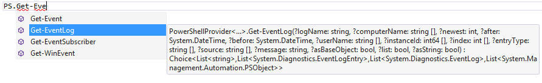

The PowerShell type provider
Requirements:
- .NET 4.5
- PowerShell 3.0
This tutorial shows the use of the PowerShell type provider.
1: 2: 3: 4: 5: 6: 7: 8: 9: 10: 11: 12: 13: 14: 15: 16: 17: 18: 19: 20: 21: 22: 23: 24: 25: 26: 27: 28: 29: 30: 31: 32: 33: 34: 35: 36: 37: 38: 39: 40: 41: 42: 43: 44: 45: 46: 47: 48: 49: 50: |
// reference the type provider dll #r "System.Management.Automation.dll" #r "FSharp.Management.PowerShell.dll" open FSharp.Management // Let the type provider infer the signatures of available cmdlets type PS = PowerShellProvider< PSSnapIns="", Is64BitRequired=false > // now you have typed access to your PowerShell and you can browse it via Intellisense PS.``Get-EventLog``(logName="Application", entryType=[|"Error"|], newest=2) val it : Choice<List<string>,List<System.Diagnostics.EventLogEntry>, List<System.Diagnostics.EventLog>, List<System.Management.Automation.PSObject>> = Choice2Of4 [System.Diagnostics.EventLogEntry {Category = "(0)"; CategoryNumber = 0s; Container = null; Data = [|126uy; 0uy; 0uy; 0uy|]; EntryType = Error; EventID = 1023; Index = 3861; InstanceId = 3221226495L; MachineName = "xxxxxxxxx"; Message = "The description for Event ID '-1073740801' in Source 'Perflib' cannot be found..."; ReplacementStrings = [|"rdyboost"; "4"|]; Site = null; Source = "Perflib"; TimeGenerated = 12/20/2013 11:08:02 PM; TimeWritten = 12/20/2013 11:08:02 PM; UserName = null;}; System.Diagnostics.EventLogEntry {Category = "Logging/Recovery"; CategoryNumber = 3s; Container = null; Data = [||]; EntryType = Error; EventID = 454; Index = 3521; InstanceId = 454L; MachineName = "xxxxxxxxx"; Message = "taskhostex (2416) IndexedDb: Database recovery/restore failed with unexpected error -1216."; ReplacementStrings = [|"taskhostex"; "2416"; "IndexedDb: "; "-1216"|]; Site = null; Source = "ESENT"; TimeGenerated = 12/20/2013 1:31:59 AM; TimeWritten = 12/20/2013 1:31:59 AM; UserName = null;}] |

Manage Windows services
1: 2: 3: 4: 5: 6: 7: 8: 9: 10: 11: 12: 13: 14: 15: 16: 17: 18: 19: 20: 21: 22: 23: 24: |
#r "System.ServiceProcess.dll" let service = match PS.``Get-Service``(name=[|"Windows Search"|]) with | Choice1Of2(services) when services.Length = 1 -> services.Head | _ -> failwith "Choice is ambiguous or service not found" val service : System.ServiceProcess.ServiceController = System.ServiceProcess.ServiceController {CanPauseAndContinue = false; CanShutdown = true; CanStop = true; Container = null; DependentServices = [|System.ServiceProcess.ServiceController; System.ServiceProcess.ServiceController|]; DisplayName = "Windows Search"; MachineName = "."; ServiceHandle = ?; ServiceName = "WSearch"; ServiceType = Win32OwnProcess; ServicesDependedOn = [|System.ServiceProcess.ServiceController|]; Site = null; Status = Running;} System.ServiceProcess.ServiceController] PS.``Start-Service``(inputObject=[|service|]) |
Working with Snapins
1: 2: 3: 4: 5: 6: 7: 8: 9: 10: 11: 12: 13: 14: 15: 16: 17: 18: 19: 20: 21: 22: 23: 24: 25: 26: 27: 28: 29: 30: 31: 32: |
// get all registered PowerShell Snapins PS.``Get-PSSnapin``(registered=true) val it : Choice<List<System.Management.Automation.PSSnapInInfo>, List<System.Management.Automation.PSObject>> = Choice1Of2 [MSDeploySnapin {ApplicationBase = "C:\Program Files\IIS\Microsoft Web Deploy V3\"; AssemblyName = "Microsoft.Web.Deployment.PowerShell, Version=9.0.0.0, Culture=neutral, PublicKeyToken=31bf3856ad364e35"; Description = "This is a PowerShell snap-in that contains cmdlets for managing Microsoft Web Deployment infrastructure."; Formats = seq []; IsDefault = false; LogPipelineExecutionDetails = false; ModuleName = "Microsoft.Web.Deployment.PowerShell.dll"; Name = "MSDeploySnapin"; PSVersion = 2.0; Types = seq []; Vendor = "Microsoft"; Version = 9.0.0.0;}; WDeploySnapin3.0 {ApplicationBase = "C:\Program Files\IIS\Microsoft Web Deploy V3\"; AssemblyName = "Microsoft.Web.Deployment.PowerShell, Version=9.0.0.0, Culture=neutral, PublicKeyToken=31bf3856ad364e35"; Description = "This is a PowerShell snap-in that contains cmdlets for managing Microsoft Web Deployment infrastructure."; Formats = seq []; IsDefault = false; LogPipelineExecutionDetails = false; ModuleName = "Microsoft.Web.Deployment.PowerShell.dll"; Name = "WDeploySnapin3.0"; PSVersion = 2.0; Types = seq []; Vendor = "Microsoft"; Version = 9.0.0.0;}] |
namespace FSharp
namespace FSharp.Management
type PS = PowerShellProvider<...>
Full name: PowerShellProvider.PS
Full name: PowerShellProvider.PS
Multiple items
namespace FSharp.Management.PowerShellProvider
--------------------
type PowerShellProvider
Full name: FSharp.Management.PowerShellProvider
<summary>Typed representation of a PowerShell runspace</summary>
<param name='PSSnapIns'>List of PSSnapIn that will be added at the start separated by semicolon.</param>
<param name='Is64BitRequired'>Mark that 64bit runtime should be used for PowerShell</param>
namespace FSharp.Management.PowerShellProvider
--------------------
type PowerShellProvider
Full name: FSharp.Management.PowerShellProvider
<summary>Typed representation of a PowerShell runspace</summary>
<param name='PSSnapIns'>List of PSSnapIn that will be added at the start separated by semicolon.</param>
<param name='Is64BitRequired'>Mark that 64bit runtime should be used for PowerShell</param>
val service : System.ServiceProcess.ServiceController
Full name: PowerShellProvider.service
Full name: PowerShellProvider.service
union case Choice.Choice1Of2: 'T1 -> Choice<'T1,'T2>
val services : List<System.ServiceProcess.ServiceController>
property List.Length: int
property List.Head: System.ServiceProcess.ServiceController
val failwith : message:string -> 'T
Full name: Microsoft.FSharp.Core.Operators.failwith
Full name: Microsoft.FSharp.Core.Operators.failwith